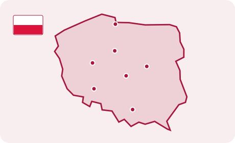

ポーランドについて

進学先を選ぶ
大学が所在する都市、学位の種類、学期と授業言語を確認します。ポーランドの学士、修士、医学などの一貫課程では募集の入口が異なります。
授業言語と生活
英語課程を選んだ場合も、住居契約や受診、行政の手続きでポーランド語が必要になる場面があります。大学の留学生窓口と現地語講座を事前に調べます。

大学が所在する都市、学位の種類、学期と授業言語を確認します。ポーランドの学士、修士、医学などの一貫課程では募集の入口が異なります。
英語課程を選んだ場合も、住居契約や受診、行政の手続きでポーランド語が必要になる場面があります。大学の留学生窓口と現地語講座を事前に調べます。